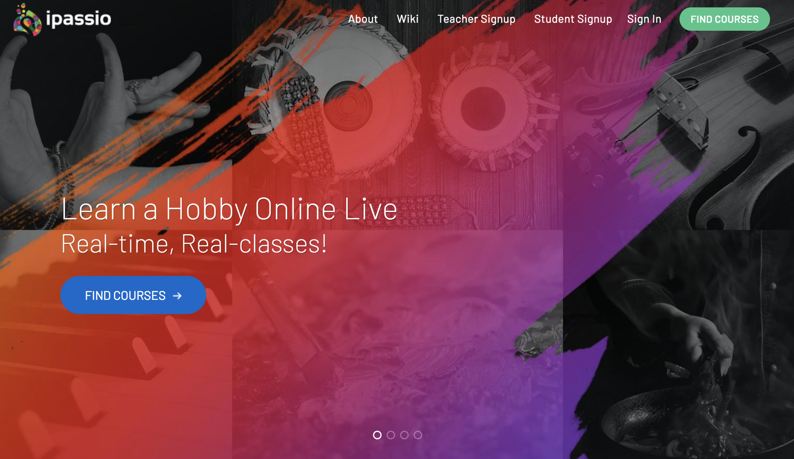
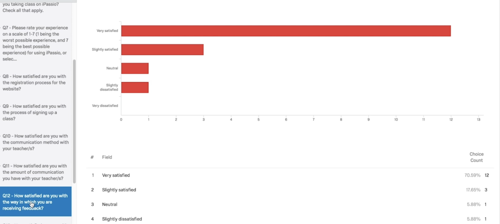
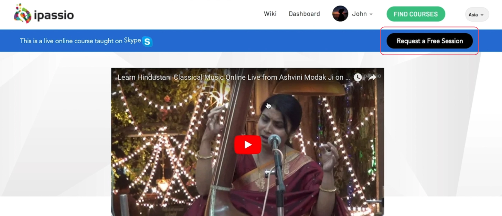
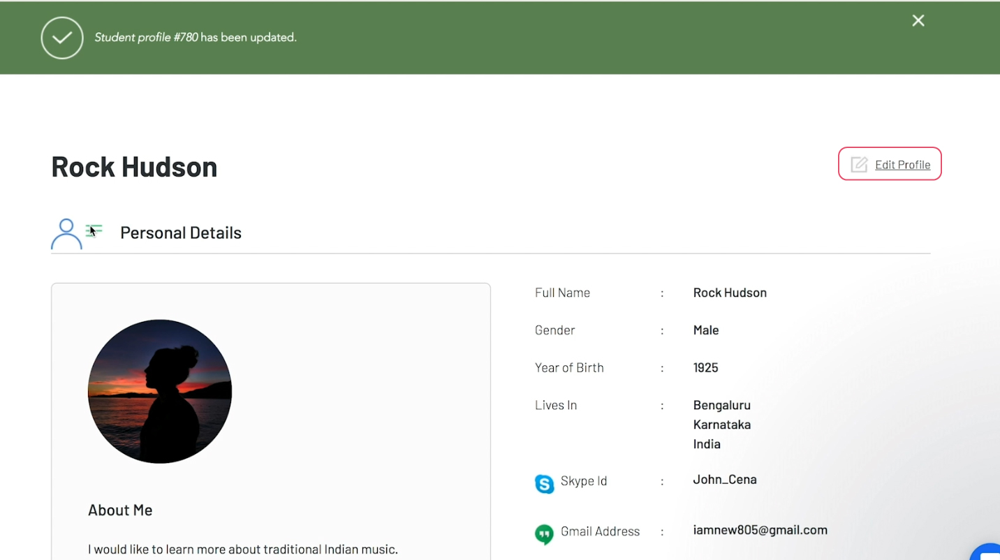
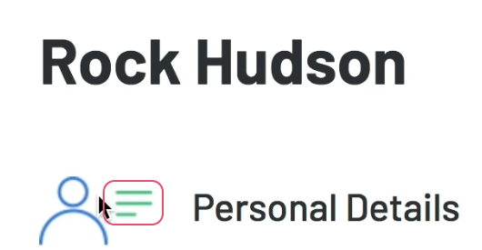

iPassio | Usability Analysis
About
As part of SI 622, my team conducted a usability analysis for iPassio, a hobby development platform based in India. We completed user interviews, penned a survey, completed a heuristic evaluation, completed user tests, made a short-form documentary film, and used data analysis to provide recommendations to iPassio based on the following objectives:
- Analyze and improve the interaction design of the iPassio platform to benefit users of both student and teacher types
- Increase the rate of new user retention through analyzing iPassio’s onboarding process
- Determine the content types that students and teachers are eager to engage with, with the goal of increasing how meaningful users find iPassio’s platform to be
Background Information
iPassio is an online learning platform where hobbyists can pursue hobby development. This web service offers students unfettered one-on-one access to their instructors. In addition to close mentorship, iPassio guarantees a productive learning environment due to their strict instructor policy of only working with highly experienced and knowledgeable teachers.
Methodology
Recruit Interview and Usability Test Participants
With help from our client we were able to connect with a variety of users of iPassio's platform. This included teachers, and students of a wide variety of backgrounds.
Interviews
Our team sat down over Skype (due to iPassio's geographic separation from our own) with various users and conducted an in depth interview that covered topics mostly having to do with their experiences using iPassio up until that point. These interviews were conducted in a sixty to ninety minute time frame with one interviewer and one note taker (each group member completed both roles by the end of the course). We were happy to have been able to speak with such a diverse group of users and came away from the interviews feeling as if we had jump started our insights into iPassio.
Comparative Analysis
After completing our interviews and distilling the data from those, our team set our sights on comparing iPassio's field of peers with our iPassio and see if any of the features offered/not offered on our client's service might be the cause for some early user discomfort. We identified competitors and developed a set of criteria that would guide our analysis based on our user and stakeholder interviews.
We came to understand that iPassio supports a large number of features that other successful online education platforms make use of, but was missing some interesting features that may have played a crucial role in their competitors’ success. Incorporating more structured instructor feedback, a social component to foster more engagement, gamification of progress to create a sense of fun, and an addition of a mobile app are some additions we believed iPassio would benefit from.
Survey Creation/Distribution/Analysis
Our team created, distributed and analyzed the results of a survey meant to get a better understanding of what is and is not working well for the users of iPassio.
We also hoped to use this survey as an opportunity for us to hear what additions or improvement users wanted to be made to the system. We were specifically interested in gleaning insight about the onboarding process, communication within the system and sentiments about cost.
The final surveys were created in Qualtrics, sent to our client, and then emailed to users via our client. We chose to have our client send out the surveys because we thought this would help to eliminate non-response bias, and because we knew that iPassio is a brand new website and that we would have trouble soliciting a large sample of users on our own. Our client told us that they would send the surveys to 40 teachers and 40 students. We hoped to get at least 25 responses from this pool of participants, but only 24 users completed the survey. This resulted in a 30% response rate.
Our most salient findings were that students wished there were more written materials to help them understand what to expect in the course, students want a way to track class progress, and teachers are not fully utilizing the features on the iPassio website that already exist to provide relevant information to their students.
Given these findings our teams key recommendations were as follows: there should be minimum acceptable requirements for teachers, which include uploading a syllabus, recorded videos or announcements on the iPassio website, adding features to the dashboard where students can mark attendance, track progress and get instructor feedback.
Heuristic Evaluation
Our team performed a heuristic evaluation while pursuing our analysis of iPassio. While heuristic evaluations may not be as thorough as usability tests, they can be used to quickly gain information about severe problems that may be present in the system. Our repurposing of the heuristic method aims to highlight which features of iPassio.com are a success (with reference to Nielsen’s ten usability heuristics) and which are, to a certain degree, failures. Looking forward, some of the features discussed in this paper could require additional analysis and others we thought might be problematic may prove agreeable. What we set out to understand was iPassio’s most substantial usability issues. Through our repeated heuristic analysis we meant to highlight the platform’s most substantial usability problem areas in order to round out our understanding of the state of iPassio. This understanding, we believe, is imperative moving forward in our usability testing for iPassio.
From our findings during the heuristic evaluation, the recommendations we made to iPassio are as follows:
- Delete links which lead to empty pages or incomplete content.
- Clearly label the time zone dropdown menu and provide users with a tiered approach to choose their time zone.
- Consider either eliminating the colored bar indicating time left in a course or adjust the colored bar according to the length of time it indicates.
- Consider using a more robust style guide/color scheme and use colors to emphasize important information on the website.
- We recommend adding a breadcrumb trail to help users navigate among different pathways as the website continues to grow.
Usability Testing
The final method our group used to round out our understanding of the usability issues iPassio faced was usability testing. During the testing of several non-users and student users of iPassio, we came across the following findings:
Users found it difficult to find the "Request a Free Session" feature of iPassio's website, which for our stakeholders ranked high among the features they would have liked users to be aware of.
Users found a pain point in that they are forced to scroll to the top of a page to make the main navigation appear on any given page within iPassio's website.
For student users, the student profile section was a source of a number of usability issues. The "edit profile" button was difficult to locate due to its placement on the profile page, its size, and the color of the font of this clickable element
A design element that did not have any interactions attached to it in the student profile page appeared to students as something that they should click on (due to it's three horizontal lines, commonly used as a signifier of a clickable menu). Students spent time trying to click on this element in order to get it to work as they anticipated, only to be frustrated when they came to the realization that there was no interaction in this area of the profile page.
Based on these findings we made the following recommendations to our stakeholders at iPassio:
The "Request a Free Session" calls to action on iPassio's website should occupy a more eye catching location, they should also appear larger on any given screen and use a heavier typeface in order to attract attention. If possible, a subtle animation meant to direct the eye of users would also be a helpful addition to make this feature stand out.
The top navigation on the iPassio website should stick to the top of the screen regardless of scroll position on the page. This way, users will be able to quickly reorient themselves if they find that the page they are on is not where they'd like to be as they scroll through the current page they are on
The "Edit Profile" clickable text on the student profile page should be oriented on the left hand side of the profile page, and should be significantly larger so that users can clearly understand that they need to interact with this element in order to make changes to their profile. Additionally, the design element with a person situated near three horizontal lines should be altered to remove the three horizontal lines, as design features such as these usually suggest some sort of clickable menu (which confused multiple users during testing of this website).
Methods Used
Ethnographic Interviews, Contextual Inquiry, Heuristic Evaluation, Survey Writing, Survey Distribution, Survey Analysis, User Testing, Report Synthesis and Production, Video Production
My Role
Project Manager, UX Researcher, Filmmaker
My Responsibilities
Interview Protocol Development, User Test Moderation, Survey Development, Data Analysis, Heuristic Evaluator, Final Presentation and Report Writing, Final Video Production